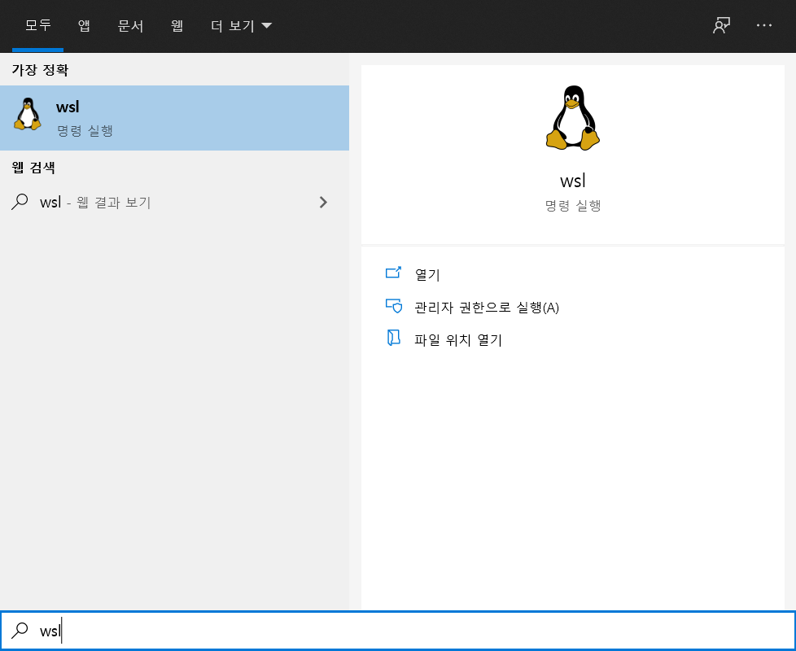
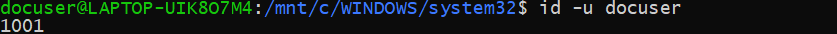
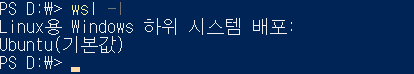
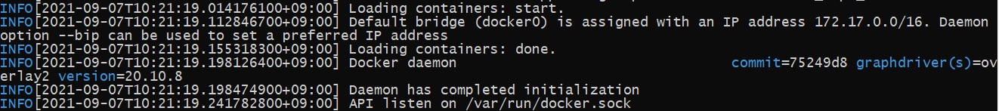
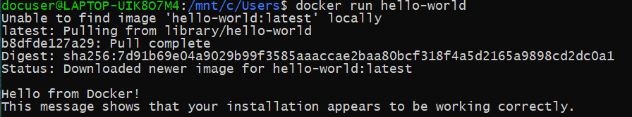
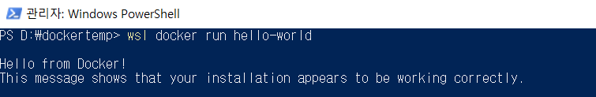
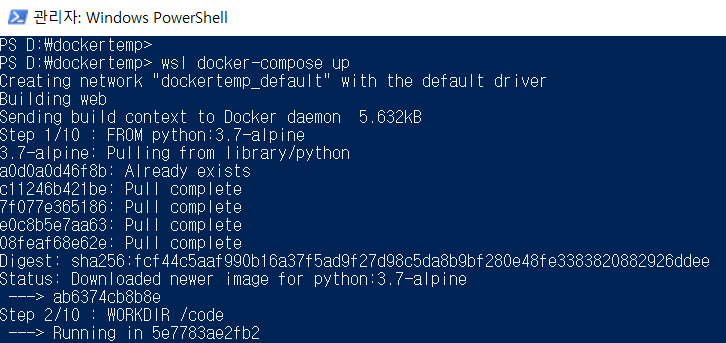
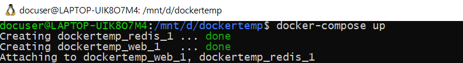
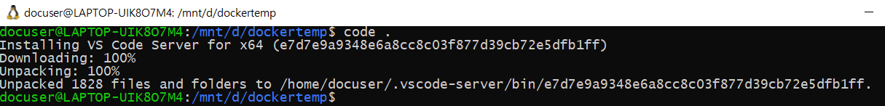
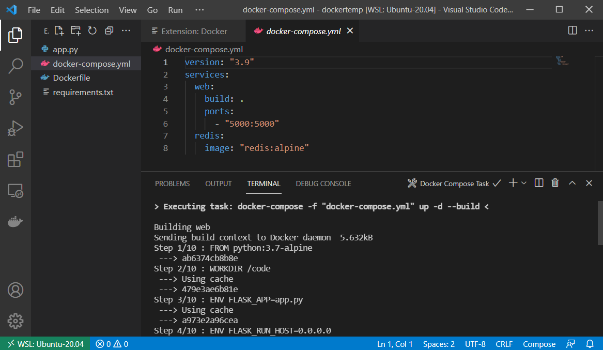

찰리브라운@기술지원실
지난 8월31일 Docker Desktop 의 상업적 이용에 대한 유료화가 발표되었습니다.
250인 이하 사업장 and 연매출 1,000만달러 이하의 조건을 만족할경우 계속 무료로 사용가능하긴 하지만, 해당하지 않는다면 내년 1월까지의 유예기간 안에 라이선스 구매나 Docker Desktop을 삭제하고 Podman 같은 대체제를 사용한다던지의 선택이 필요해졌습니다.
Windows/MacOS 사용자라면 거의 Docker Desktop을 사용했기에 많은 개발자들에게 영향이 있을것 같네요.
https://docs.docker.com/get-docker/
공식 문서에서 Windows/Mac의 설치방법은 Docker Desktop만 안내됩니다.
앞으로 이 유료화 정책을 각 회사들이 어떻게 회피하거나 받아들이지 궁금합니다만, 오늘은 Windows에 Docker Desktop없이 Docker를 설치해 사용하는 방법을 알아보도록 하겠습니다.
Docker Desktop을 사용하는게 편리성에서 최선의 방법이라는 사실은 변함없습니다.
WSL2의 사전 설치가 필요합니다. 이하는 Ubuntu 20.04에서 진행했습니다.
복수의 WSL을 사용하는 경우 추가적인 설정이 필요합니다. 이번글에서는 다루지 않습니다.
- WSL을 실행합니다.

검색이나 실행으로 쉽게 찾을 수 있습니다.
이하의 계정 추가는 Microsoft Store를 통해 리눅스를 설치했을때 자동생성되는 계정을 사용할 경우 스킵 가능합니다.
계정 추가
- docker를 사용할 계정을 추가합니다.
1
adduser (username)
- docker를 사용할 계정을 추가합니다.
계정에 권한 부여
- 생성한 계정에서 sudo 를 가능하게 합니다.
1
usermod -aG sudo (username)
- 사용하는 리눅스 배포판에 따라 명령어는 다를 수 있습니다.
- 생성한 계정에서 sudo 를 가능하게 합니다.
계정을 docker group에 추가
- dockerd와 docker는 socket통신을 하기 때문에 권한이 필요합니다.
1
sudo addgroup (username) docker
- dockerd와 docker는 socket통신을 하기 때문에 권한이 필요합니다.
생성한 계정을 default 계정으로 설정
- 계정ID 확인
1
id -u docuser
예제의 ID는 1001 로 확인됩니다.
- WSL의 리눅스 이미지 확인 (Powershell 에서 실행)
1
wsl -l
예제의 리눅스 이미지는 Ubuntu 로 확인됩니다.
- 확인한 정보를 이용해 WSL 기본 계정 지정 (Powershell 에서 실행)
1
Get-ItemProperty Registry::HKEY_CURRENT_USER\Software\Microsoft\Windows\CurrentVersion\Lxss\*\ DistributionName | Where-Object -Property DistributionName -eq Ubuntu | Set-ItemProperty -Name DefaultUid -Value 1001
- 설정반영을 위해 WSL을 재부팅 (Powershell 에서 실행)
1
Restart-Service LxssManager
- 계정ID 확인
Docker 설치준비
리눅스 배포판별 설치가이드: https://docs.docker.com/engine/install/#server
여기서는 Ubuntu를 기준으로 합니다.- 기존 Docker 삭제
1
2
3sudo apt-get remove docker docker-engine docker.io containerd runc
sudo apt-get purge docker-ce docker-ce-cli containerd.io
sudo rm -fr /var/lib/containerd/ - 필요 패키지 설치
1
2sudo apt-get install apt-transport-https ca-certificates curl gnupg lsb-release
sudo apt-get update - Docker 공식 GPG 키
1
curl -fsSL https://download.docker.com/linux/ubuntu/gpg | sudo apt-key add -
- Docker stable repo 사용
1
sudo add-apt-repository "deb [arch=amd64] https://download.docker.com/linux/ubuntu $(lsb_release -cs) stable"
- 기존 Docker 삭제
Docker 설치
1
2
3sudo apt install docker-ce docker-ce-cli containerd.io
sudo curl -L "https://github.com/docker/compose/releases/download/1.29.2/docker-compose-$(uname -s)-$(uname -m)" -o /usr/local/bin/docker-compose
sudo chmod +x /usr/local/bin/docker-composeDocker daemon(dockerd) 실행
1
sudo dockerd
스크린샷과 같은 메시지가 표시되면 dockerd가 실행된겁니다.
 WSL 터미널을 하나 더 열어 잘 실행되는지 확인합니다.
1
docker run hello-world
 Powershell에서도 실행해봅니다.
1
wsl docker run hello-world

Docker-compose 실행
 Powershell에서 docker-compose도 문제없습니다.
- 퍼포먼스를 위해서는 Windows->WSL 호출보다 WSL->windows 호출이 더 효율적이라고 알려져있습니다. 성능을 위해서는 이렇게 쓰는게 좋습니다. (참고: https://docs.microsoft.com/en-us/windows/wsl/interop)
- 퍼포먼스를 위해서는 Windows->WSL 호출보다 WSL->windows 호출이 더 효율적이라고 알려져있습니다.
- VScode 사용
- WSL에서 명령어 하나로 해당 디렉토리를 VScode로 부를 수 있습니다.
 1
code .
- VScode가 실행되며 해당 디렉토리의 파일을 불러옵니다.
 docker 플러그인을 통해 docker-compose up 명령이 잘 실행되는걸 볼 수 있습니다.
- WSL에서 명령어 하나로 해당 디렉토리를 VScode로 부를 수 있습니다.
Docker Desktop없이 Docker를 설치하고 실행하는 방법을 알아봤습니다. 앞으로 Docker Desktop사용자들은 유료화를 어떻게 대응해나갈까요?